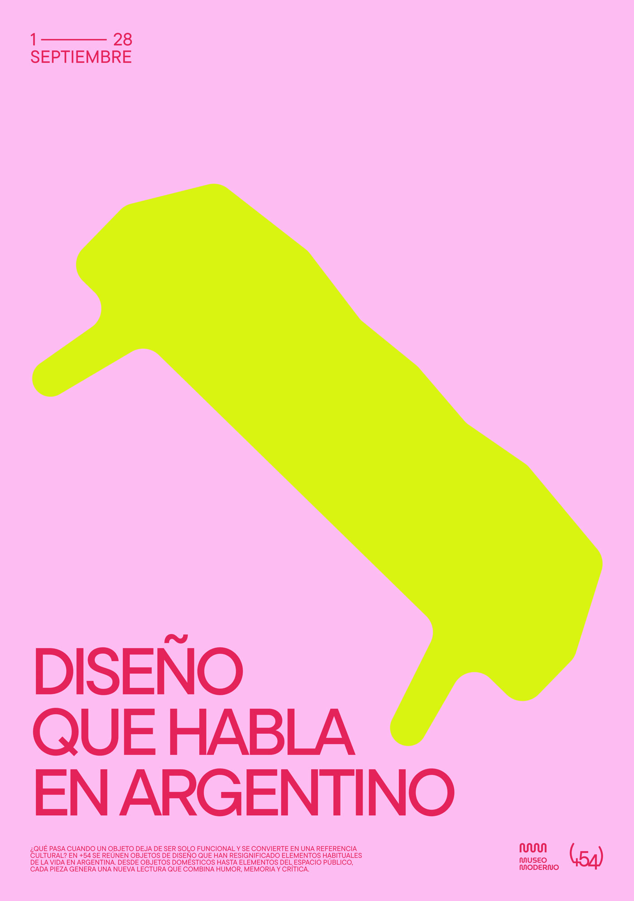
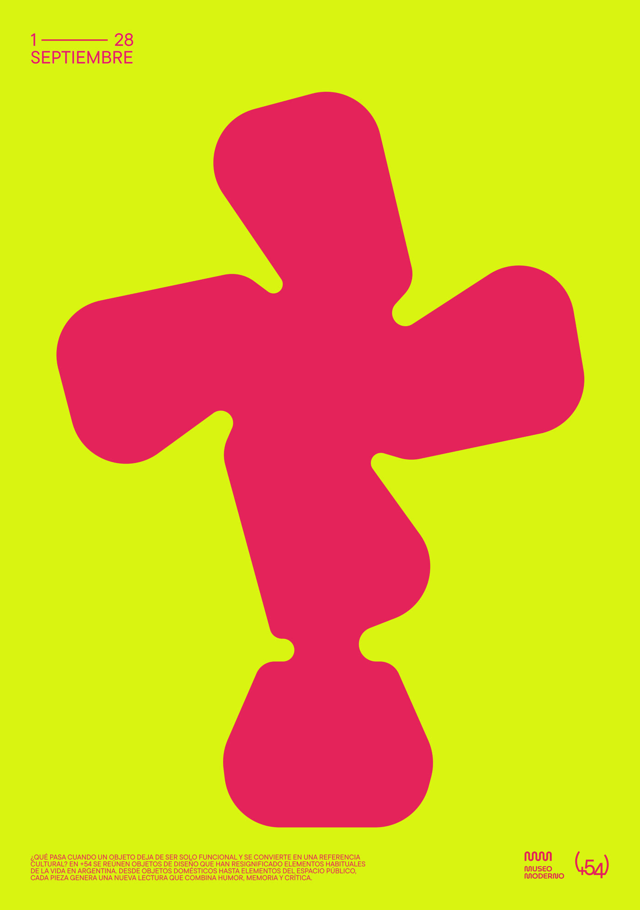
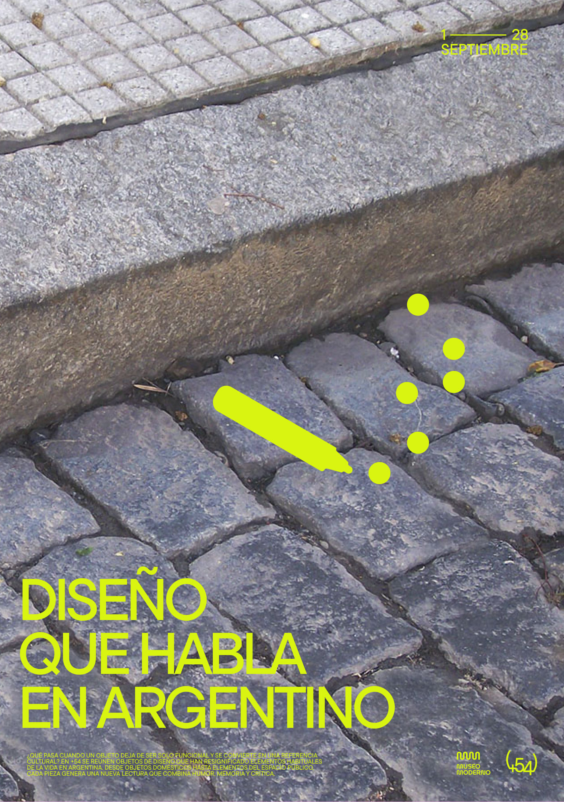
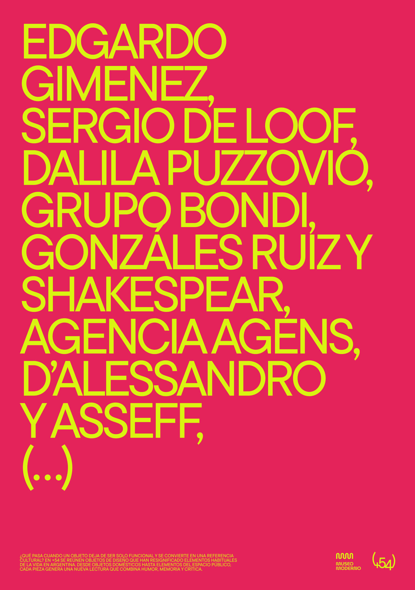
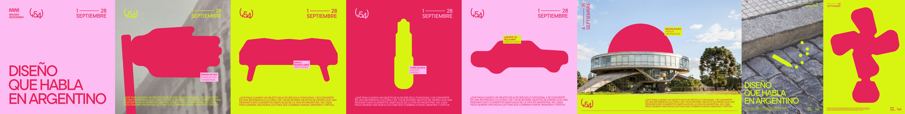
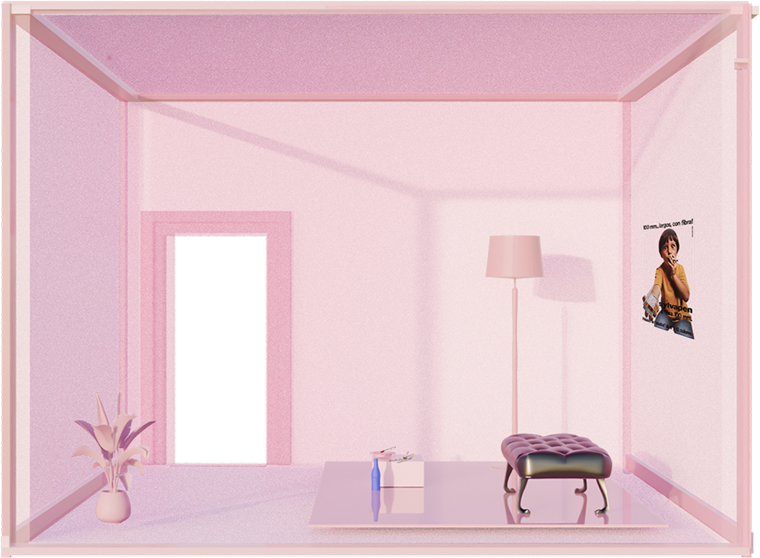
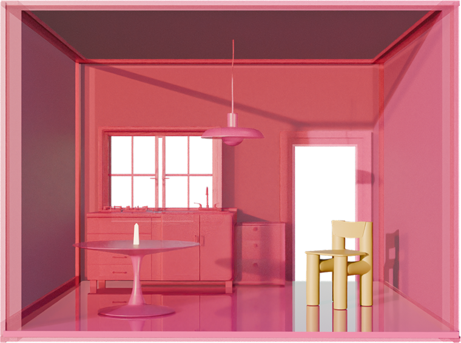
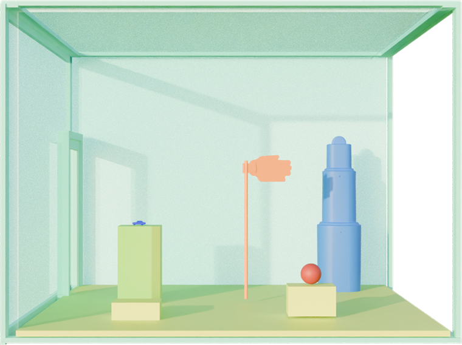
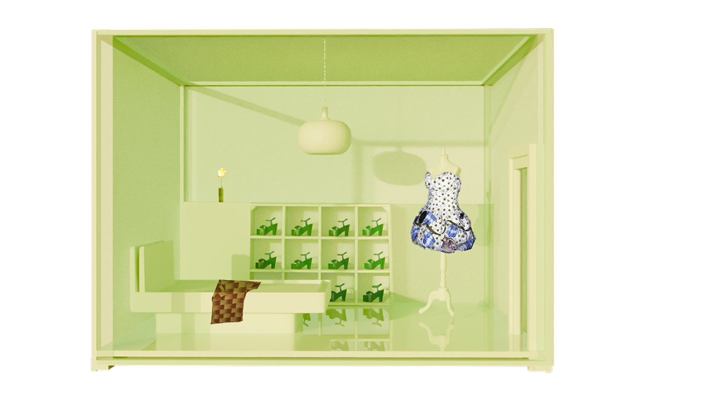
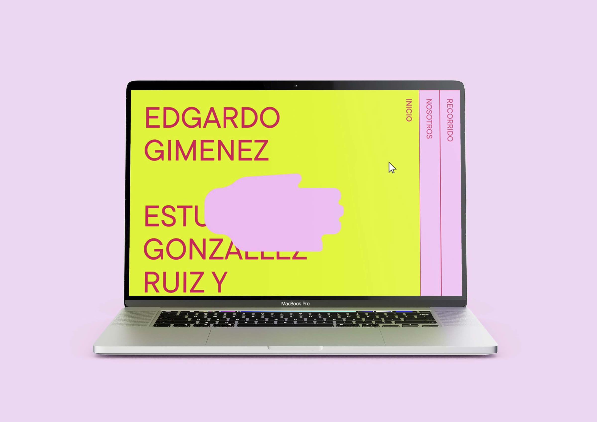

Qué es
+54 reúne objetos que atravesaron la vida cotidiana argentina y volvieron con otra lectura, entre el humor, la memoria y la crítica. El nombre toma el código de teléfono del país: un dato mínimo que alcanza para reconocerse. Cada pieza funciona igual, un gesto compartido que se activa apenas se lo reconoce.

01 / 08
Historias
La instalación
La casa es donde este doble sentido se vive en primera persona. Una estructura modular y transportable de cuatro cubos, cada uno una habitación con su propio color, que recorre distintos puntos icónicos de Buenos Aires al aire libre.




El sitio

Postales